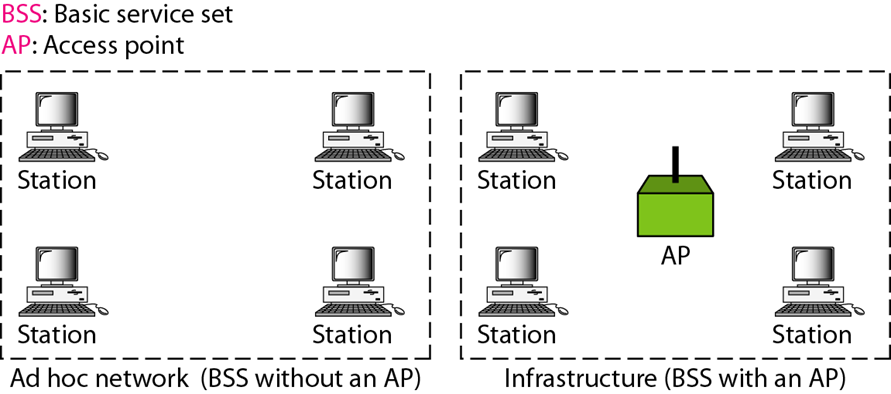
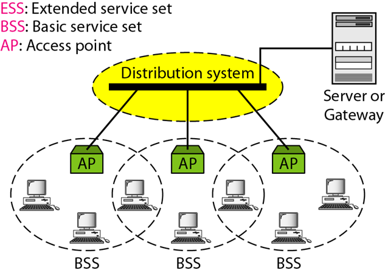
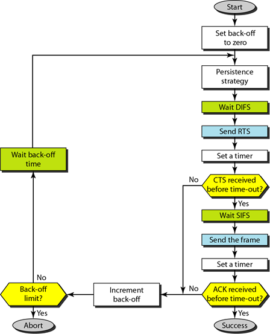
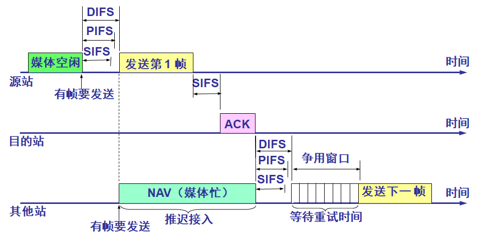
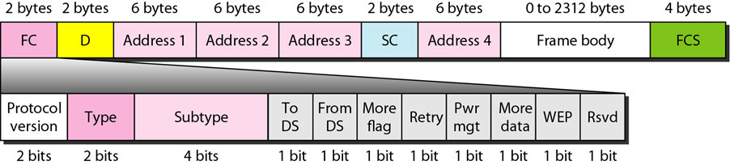
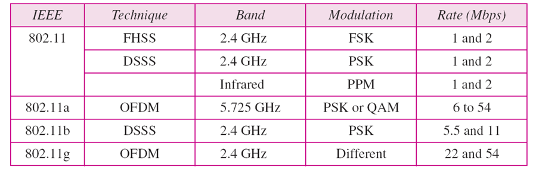
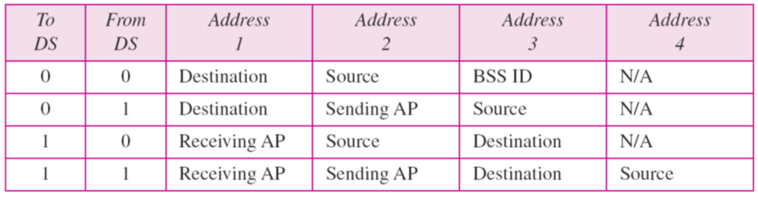
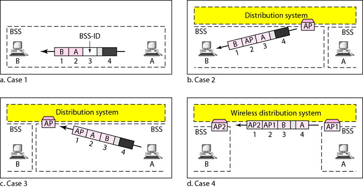
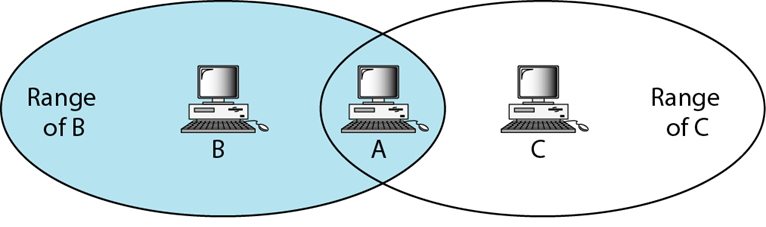
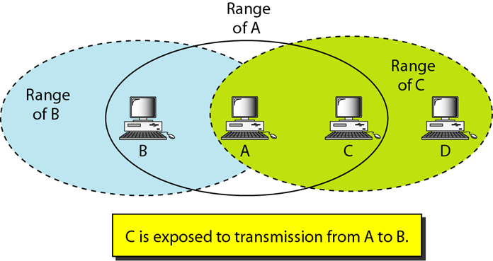

第 14 章 无线局域网
一. WLAN 体系结构与 IEEE 802.11 标准
体系结构
基本服务集(BSS)
无线局域网的基本组成部分
分为特别网络和基础设施网络
- 特别网络: 不带 AP (access point, 访问点/接入点)
- 基础设施网络: 有一个 AP, 也称作基础网络

扩展服务集(ESS)
由两个或更多个带有 AP 的 BSS 组成
通过分布式系统连接各 AP, 连接方式为任意的 IEEE 局域网, 例如以太网
移动站点: 普通的站点; 固定站点: AP
同 BSS 内可以直接通信, 但不同 BSS 下不能直接通信
移动站点可以同时属于多个 BSS

站点类型
- 不迁移: 不动或者仅在一个 BSS 内部移动
- BSS 迁移: 在同一个 ESS 下, 可以在 BSS 间移动
- ESS 迁移: 可以在不同的 ESS 间迁移, 但不保证连续
二.MAC 子层
（DCF 和 PCF）、帧结构
分布式协调功能（DCF）
DCF: Distributed Coordination Function
采用 CSMA/CA 作为访问方式, 原因:
- 否则需要发送时同时侦听, 提高成本
- 由于隐藏站点可能无法检测冲突
- 站点间距导致的信号衰减可能会使两端无法检测到对方的冲突

### 点协调功能（PCF）
PCF: Point Coordination Function
- 集中式无竞争轮询
- 优先级高于 DCF, 主动权在 AP
- 主要用于对时间敏感数据的传输

帧结构
帧格式
9 个字段: 帧控制 (FC), D, 地址 (有四个), 序列号, 帧主题, FCS (帧校验和, CRC-32)
三种类型: 管理帧, 控制帧, 数据帧
三. 802.11 物理层、寻址方式、隐藏站点和暴露站点
物理层

FHSS调频扩频；DHSS直接序列扩频；红外线，PMM脉冲位置调制
OFDM正交频分多路复用；DSSS高速率直接序列扩频；OFDM正交频分多路复用
寻址机制
- 四种情况: 站点间, AP 间, 站点和 AP 之间 (双向)
- 通过 FC 中的 To DS (发往分布式系统, 差不多就是某个 AP) 和 From DS (来自分布式系统, 如前) 确定具体情况, 见下


- 该帧既不是发往一个分布式系统，也不是来自于一个分布式系统，而是从同一个BSS中的一个站点到另外一个站点，不经过DS，需要给原始发送站回送ACK帧
- 该帧来自于分布式系统，从一个AP来，到一个站点去，ACK帧将被回送给AP
- 该帧要发送给一个分布式系统，从一个站点发往AP，ACK帧将被发送到原始站点
- 暗示分布式系统也是无线的，从一个DS的AP发送到另外一个DS的AP；
因为如果其中一个DS是一个有线局域网，则这里就不需要定义地址
隐藏站点

- 若 B -> A, C -> A, 由于 B C 之间相互隐藏, 不知道对方存在, 因此会造成冲突
- 解决方法: 使用握手帧 (RTS 和 CTS, 请求发送和允许发送)
暴露站点

- 若 A -> B, 开始后 C -> D, 由于前者干扰导致后者必须等待 (即使 D 不在 A 范围)